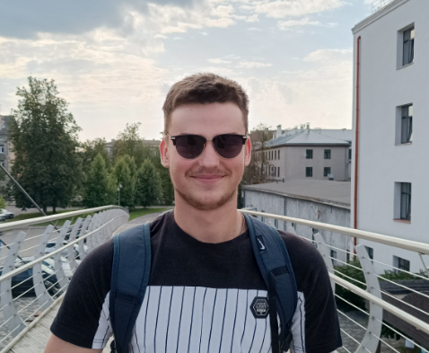

Raivis Neilands - Resume

Summary
I am 21 years old student from Latvia currently studying computer science and I am on my way to become software engineer. In my free time I like to play sports and I have a lot of motivation to become a full stack web developer. I enjoy coming up with solutions for any kind of problems.
Education
- University of Debrecen - ERASMUS+ programme for 1 semester
- Computer Control and Computer Science BSc, Latvia University of Life Sciences and Technologies (2022 - current)
- Tukums Secondary School nr. 2 (2019 - 2022)
Work experience
Puratos Latvia (2023 June - 2023 August)
- Responsibilities:
- pour frozen goods on conveyer belt for sorting,
- packaging finished products into containers,
- unloading incoming deliveries,
- washing crates where products went,
- cleaning machines and workshop once a month.
Skills
- Communication,
- languages:
- Latvian - native,
- English - high,
- Russian - medium,
- computers
- MS office
Other
Hobbies
Contact me